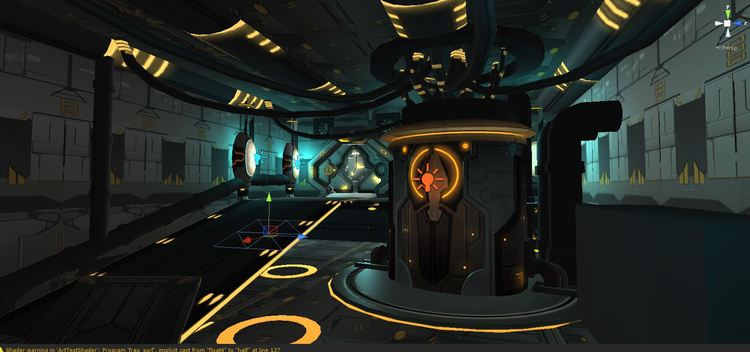
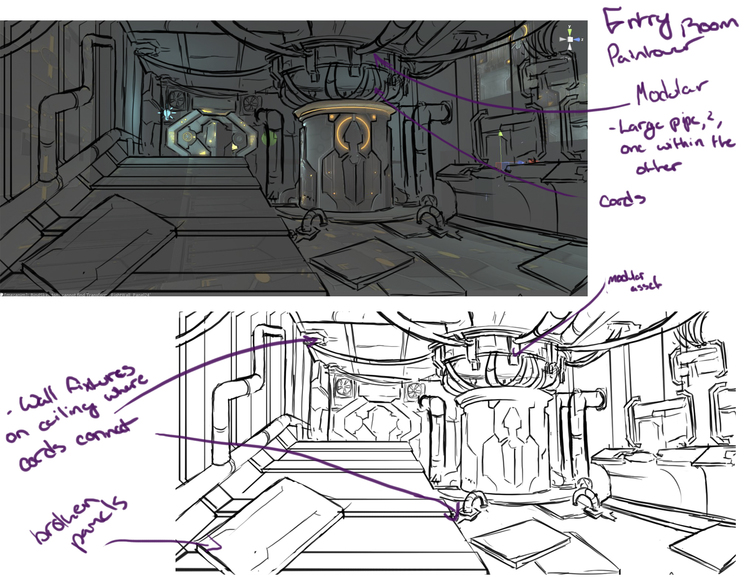
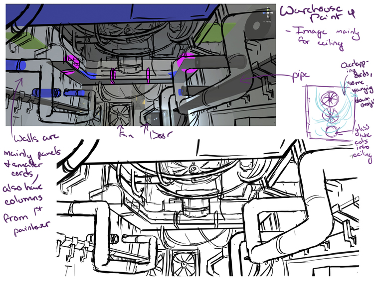
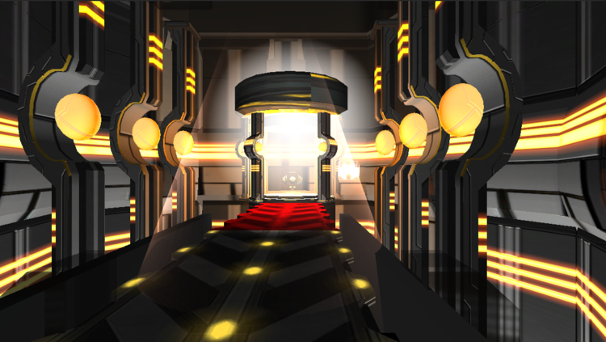
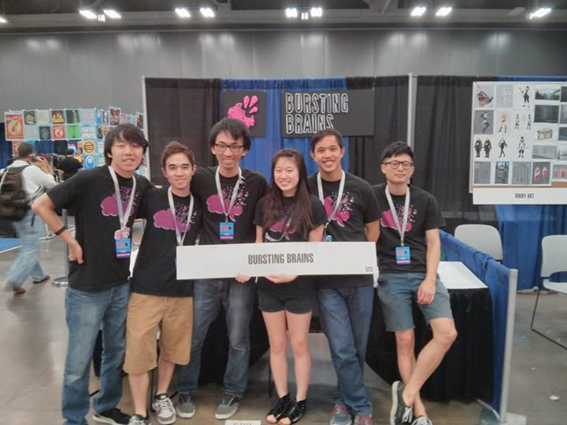

Oculus Escape
Early Oculus Rift VR game demo developed at Bursting Brains

Overview
Oculus Escape was a VR game demo built at Bursting Brains shortly after the first Oculus Rift development kits became available. The full experience was designed and built in under two months to be showcased at the Rooster Teeth gaming convention in Austin, Texas. Consumer VR headsets were still three years away, making this an extremely early entry into the space that generated a lot of excitement due to how new and inaccessible VR experiences were at the time.
The game placed the player inside a space station caught between dimensions. By looking at specific points in the environment, they could temporarily materialize remnants of the station's past or future, bringing platforms and pathways into existence long enough to cross them. The gaze mechanic was designed around the headset's independent head tracking, turning the player's gaze into the primary tool for interacting with the world.
Development
Even within this project's compressed timeline, the final product looked almost nothing like what was originally planned. The initial concept centered on playing as an ethereal being with fluid, gliding movement through open spaces. Beyond that core sensation, the larger mechanics weren't deeply planned. That already loose foundation would be largely uprooted midway into development.


The CEO had a connection with an art school whose students created the project's assets, but there was almost no coordination between their work and ours. When the assets finally arrived, they depicted tight indoor corridors, which were a direct contradiction to the free-roaming movement the game had been built around up to that point. Given our clear deadline, we had to rethink our whole concept to make use of these assets.
Rather than fully abandon the movement-centric concept however, we adapted the general idea into something new. The core mechanic became about taking advantage of VR's independent head and body movement in order to solve puzzles to get through the level. Players would have to look and move in separate directions, coordinating both together to make it past each challenge. We also adapted the original concept of being an ethereal alien into the environment itself being a sort of ethereal place caught between moments in time. Strange celestial objects appeared in the environment that when looked at would reveal parts of the station as it existed in the past or future, before construction was complete or after it had been damaged by some unknown catastrophe. This would materialize platforms the player needed to proceed.
The given level asset was an open-ended space station. I rearranged the environment into a linear layout that gave players a clear direction to proceed through. The team then added puzzles along this pathway to overcome and gate progress between areas. Amongst the rooms in the station, there was a clear area that would be made into a natural endpoint. An item at an altar that sat across a bridge served as a macguffin for players to reach.

The initial plan was for the demo to simply end once you reached this item, but that felt incredibly anticlimactic. We still had unused character assets, fully rigged with animations that had been completely wasted. I came up with an idea that we create an impossible puzzle on this bridge that would result in the player falling into the pit below as they try to reach the object. Here we could make use of a previously unused robot character. The player would be stuck in this pit as they watch this giant robot slowly power-on, grab them, hold them in the air in its hand, and then smash them to death as the big finale. I came up with and programmed the entire sequence the day before we had to present at our convention booth, working through until morning to get it finished.
Outcome
The experience was simple by today's standards, but VR was brand new territory that no one else at the convention was even doing. That novelty drove strong interest at our booth, resulting in long lines and drawing the attention of notable content creators like Freddie Wong. Unfortunately the project has largely been lost to time as witnessed by the lack of visuals still available. However, given the tight time frame, coordination issues, and a dev team made up entirely of college students, the game coming together at all was a small miracle and major achievement in and of itself.
